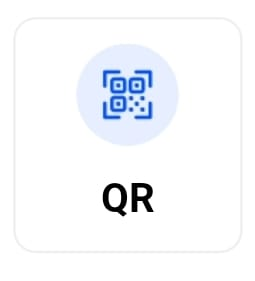
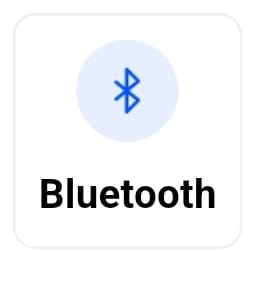
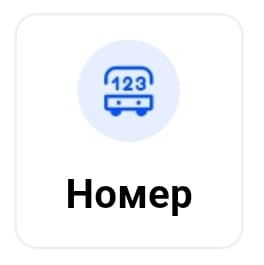
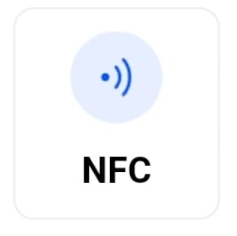
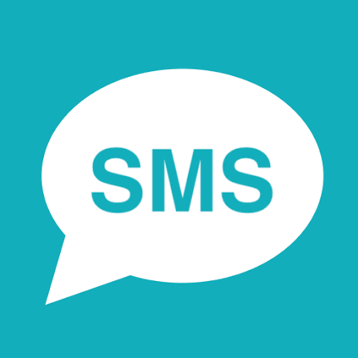
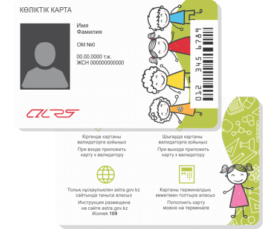

Тарифы и способы оплаты
Вся информация о стоимости проезда, доступных сервисах оплаты и штрафах.
Стоимость проезда
Безналичный расчёт
150 ₸
При оплате любым электронным способом (карта, QR, мобильные приложения).
Оплата наличными
300 ₸
Расчёт наличными средствами у водителя.
Льготный & Школьный проезд
Бесплатно / 0 ₸
Для школьников до 18 лет и льготных категорий граждан Астаны при наличии валидированной именной карты.
7 способов электронной оплаты

1. Приложение Avtobys (QR)
В приложении Avtobys или какого-нибудь банка нажмите кнопку «QR», наведите камеру на наклейку в салоне и подтвердите оплату. Школьники и пенсионеры могут оформить виртуальный тариф в приложении Avtobys, чтобы пользоваться льготой без физической карты.

2. Bluetooth-оплата в Avtobys
Автоматическое определение автобуса через Bluetooth в приложении Avtobys — оплата в один клик без сканирования QR.

3. Бортовой номер
В приложении Avtobys нажмите кнопку «Номер», введите бортовой номер с наклейки в салоне и подтвердите списание с кошелька.

4.NFC
Выберите «NFC» в приложении Avtobys и поднесите верхнюю часть смартфона к валидатору. Убедитесь в активности функции NFC и наличии баланса в кошельке приложения.

5.SMS
Отправьте транспортный код с наклейки в салоне на короткий номер 2505. В ответном сообщении придет электронный билет с QR-кодом для предъявления контролёру.

6. Детский или льготный проездной
Для школьников и пенсионеров доступны транспортные карты за 1200 теңге, дающие право на бесплатный проезд при обязательной валидации. Без карты проезд оплачивается по стандартному тарифу 110 теңге. Для остальных граждан доступна стандартная карта за 1000 теңге с возможностью пополнения баланса.
7.Банковская карта
При входе в автобус просто приложите вашу бесконтактную банковскую карту к валидатору для автоматического списания оплаты.
Месячные проездные
Также доступны месячные проездные стоимостью от 7500 теңге до 13500 теңге, а также трехмесячный проездной за 20000 теңге.
Внимание:
За безбилетный проезд в общественном транспорте предусмотрен штраф в размере 2 МРП (согласно ст. 622 КоАП РК). Оплачивайте проезд сразу при входе в автобус и сохраняйте электронный чек или билет до конца поездки!